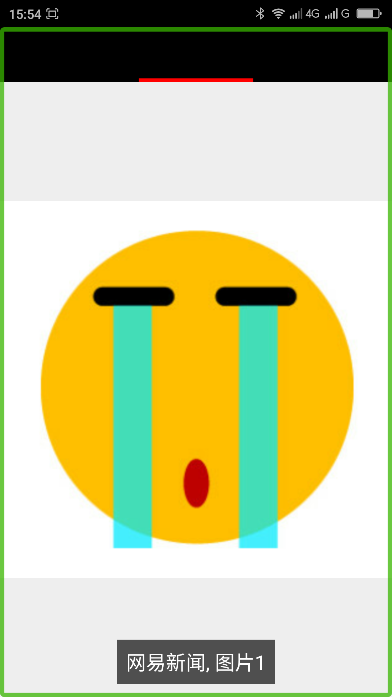
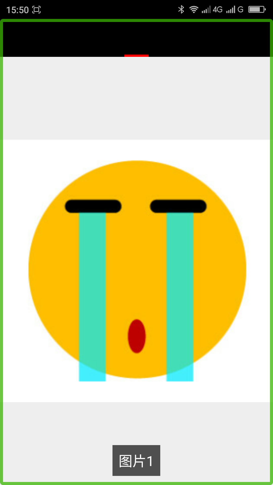

去除ViewPager中的大焦点____20160525
【问题描述】
用ViewPager控件的时候如果用PagerTabStrip控件给每一页的ViewPager提供了标题的时候，会产生一个朗读为此标题的大焦点，而且提供了此焦点会影响用户在ViewPager中滑动浏览的体验效果，如你添加了“网易新闻”、“网易体育”等几个标题，在“网易新闻”界面滑动浏览的时候会浏览到一个朗读为“网易体育”的焦点。
【问题代码】
下面的代码是MainActivity.java中的代码，下面的代码中给PagerTabStrip提供了标题(title)，所以会有大焦点和影响滑动浏览的问题。
注：MainActivity.xml布局文件的代码参见“附1“。每一个tab的代码请参见“附2”。
复制内容
【问题解决方案描述】
用ViewPager展示内容的时候不用PagerTabStrip提供标题，这个标题不会显示，所以不会影响视觉上的改变。
【前后效果图对比】
|  |  |
| 优化前，使用PagerTabStrip为图片提供标题，有一个大焦点，屏幕阅读器朗读“网易新闻 图片1”; | 优化后，删除了PagerTabStrip提供的标题，屏幕阅读器朗读“图片1 ”； |